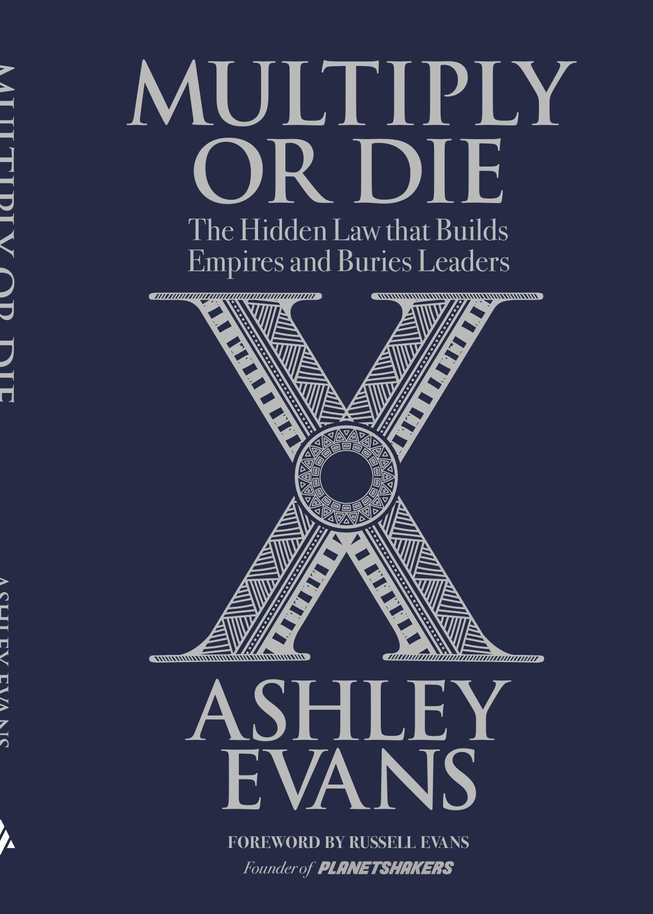

Multiply or Die
The book and the masterclass for pastors who want a church that multiplies.
Get the book & masterclassKlaim buku gratis untuk konferensi telah ditutup. Terima kasih.

The book and the masterclass for pastors who want a church that multiplies.
Get the book & masterclassKlaim buku gratis untuk konferensi telah ditutup. Terima kasih.